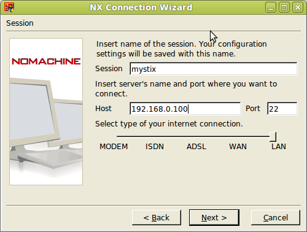
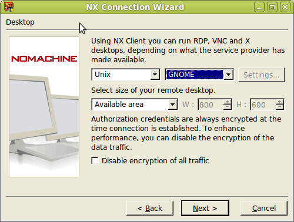
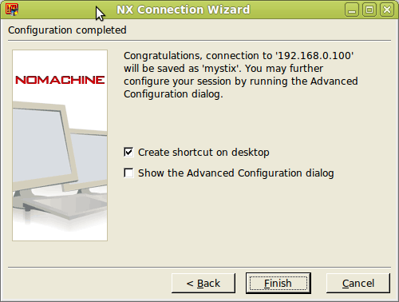
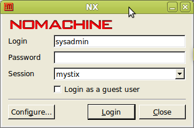

После нажатия кнопки "
Next" в следующем окне нужно ввести параметры создаваемого соединения:

- Session - имя соединения (произвольная строка)
- Host - IP-адрес сервера
- Port - порт сервера (должен быть 22)
- Select type of your internet connection - тип соединения. Если
рабочая станция подключается к серверу по локальной сети, выбирается
"LAN"
После ввода параметров соединения и нажатия кнопки "Next" появятся параметры экрана удаленного рабочего стола:

Желательно сделать именно так, как показано на этом
изображении, потому что на сервере установлена Unix-подобная
операционная система с графической средой GNOME.
Размер экрана установлен в "Available area", такая настройка будет
автоматически использовать всю доступную область экрана для удаленного
рабочего стола.
После нажатия кнопки "Next" произойдет переход к финальной стадии создания подключения.

Если установлен флажок "Create shortcut on desktop", будет создан ярлык
соединения на рабочем столе. При включении флажка "Show the advanced
Configuration Dialog", после завершения работы мастера откроется окно
свойств соединения, в котором доступны все его параметры.
После нажатия кнопки "Finish" мастер завершит свою работу и отобразит окно установки соединения.

Подключение к удаленному рабочему столу производится от имени любого
пользователя, заведенного на сервере. Изначально, на сервере заведен
пользователь root с паролем 111111. После ввода
имени и пароля в поля "Login" и "Password" соответственно, нажмите
кнопку "Login" и, если все данные введены верно, появится удаленный
рабочий стол сервера.
При подключении к рабочему столу сервера может возникнуть ошибка
"Cannot initialize display device". Она возникает, если вы вошли в
Windows от имени учетной записи пользователя с именем на русском языке.
FreeNX-клиент не умеет читать свои настройки, если они находятся в
папке C:\Documents and Settings\<Имя пользователя с русскими буквами
в названии>. Пока эту ошибку разработчики не исправили. В
качестве решения можно завести на компьютере с Windows учетную запись
с именем на английском языке и входить в систему от имени этой учетной
записи. Есть и второй, более сложный способ - переименовать находящуюся
в "C:\Documents and Settings" папку пользователя и в настройках
учетной записи пользователя указать, чтобы для него использовалась эта
папка в качестве домашней.
В Linux проблем с подключением замечено не было (потому что учетные
записи пользователей Linux не могут содержать в своих именах русские
буквы).
Удаленный доступ к командной строке сервера
Иногда некоторые операции проще выполнить с помощью командной строки,
без графического интерфейса. Можно подключиться к командной строке
сервера по протоколу SSH, используя клиент SSH. Клиент SSH для Windows
находится в общей папке utils на сервере и называется Kitty. Скопируйте
файл kitty.exe на рабочую станцию администратора и запустите.
В окне программы нужно ввести IP-адрес сервера в поле "hostname" и
нажать Enter для подключения. Далее система попросит ввести логин и
пароль для входа. Можно подключаться от имени любого пользователя, заведенного на сервере.
Чтобы выйти из режима командной строки используется команда exit.
Для подключения к командной строке сервера из Linux не нужно
устанавливать клиент SSH, так как он уже есть в любом дистрибутиве. В
Linux нужно запустить эмулятор терминала и набрать:
ssh root@<ip-адрес-сервера>
Вместо 'root' можно также указать имя любого другого пользователя,
учетная запись которого заведена на сервере. Далее система попросит
ввести пароль этого пользователя и после успешного прохождения
аутентификации подключит терминал к серверу в режиме командной строки.
Для выхода из командной строки сервера используется команда exit.